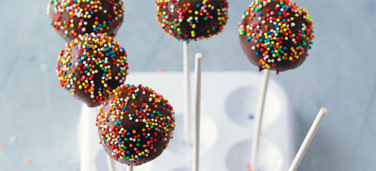
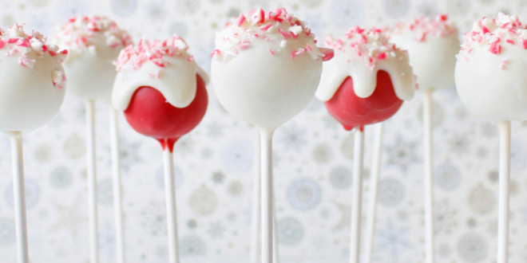

Cake Pops - Das Grundrezept

Zubereitung: 1 Std., Kühlen: 45 Min. Zutaten für 18 Cake-Pops
- 300g heller oder dunkler Tortenboden (Fertigprodukt oder selbst gemacht)
- 60g weiche Butter
- 70g Puderzucker
- 140g Doppelrahmfrischkäse
- 1 El Rum oder einige Tropfen Backaroma (nach Belieben
- 150g Zartbitterkuvertüre
- Zuckerdekor
- Außerdem: 18 Holzstäbchen
-
Den Kuchen fein zerkrümeln. Für die Frischkäsecreme - Butter, Puderzucker, Frischkäse und Rum mit dem Handrührgerät ca. 3 Min. lang gründlich verrühren. Mit einem Löffel nach und nach so viel Frischkäsecreme unter die Brösel rühren, bis die Masse gut formbar ist. Sie darf aber nicht zu feucht sein und beim Formen nicht an den Händen kleben.
-
Von der Masse 18 Portionen abstechen und rund formen. Die Bällchen 30 Min. kühlen. Inzwischen die Kuvertüre hacken und über dem warmen Wasserbad schmelzen. Die Holzstäbchen nacheinander ca. 1 cm tief in die Kuvertüre tauchen und in die Bällchen stecken. Auf einen Teller setzen und nochmals 15 Min. kühlen.
-
Die Kuvertüre bei Bedarf wieder erwärmen. Einen Cake-Pop leicht schräg eintauchen und durch Drehen mit Kuvertüre überziehen. Überschüssige Kuvertüre durch Klopfen am Schüsselrand abschütteln. Dabei den Cake-Pop drehen, damit sich keine Nasen bilden. Nach Belieben mit Zuckerdekor verzieren und trocknen lassen. Mit den übrigen Cake-Pops ebenso verfahren.
Guten Appetit!
